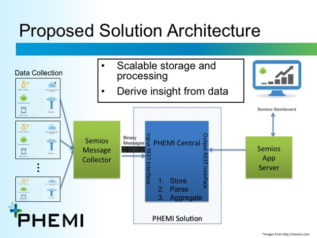
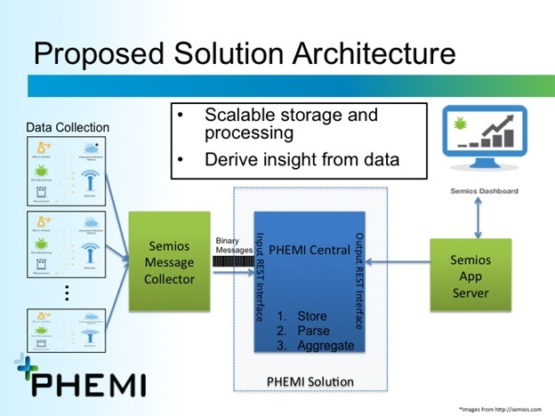
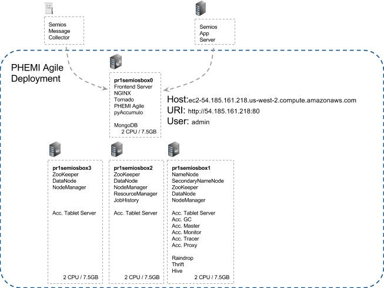

Architcture, deployment, and infrastructure of proposed solution
The following diagram illustrates the high level architecture of the Semios-PHEMI integration.
 

This architecture is deployed with the following infrastructure details
